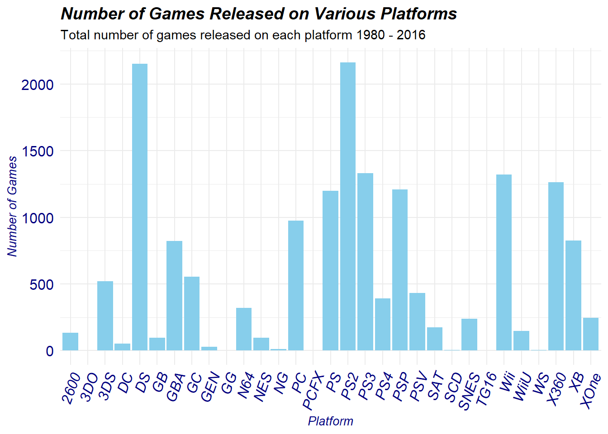
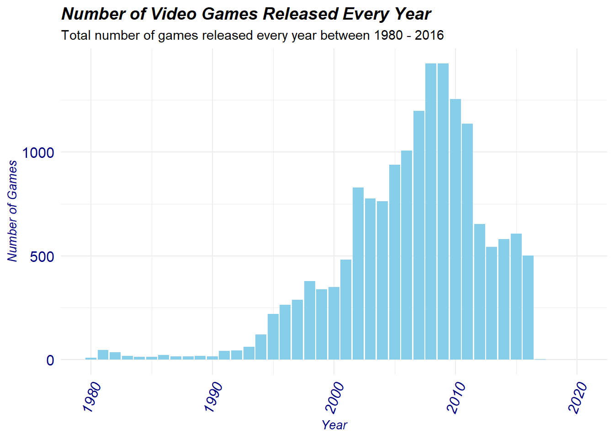
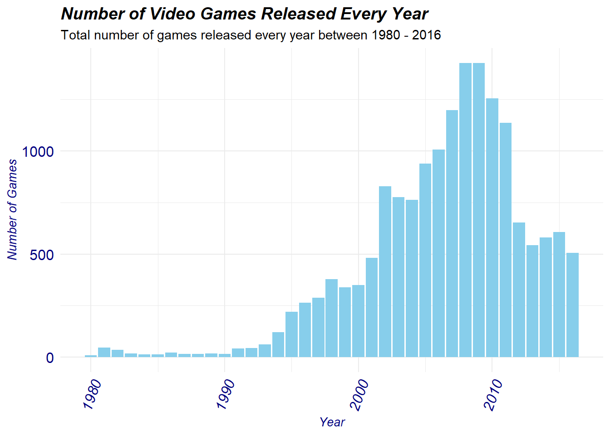
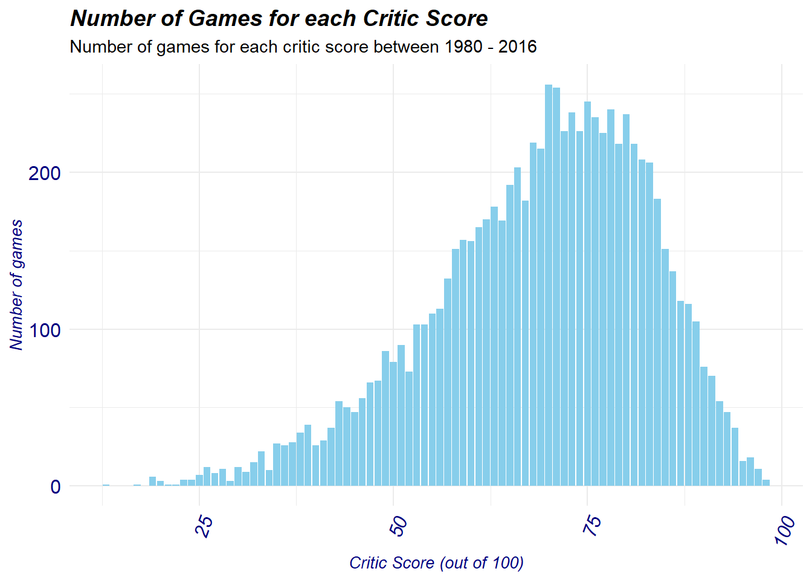
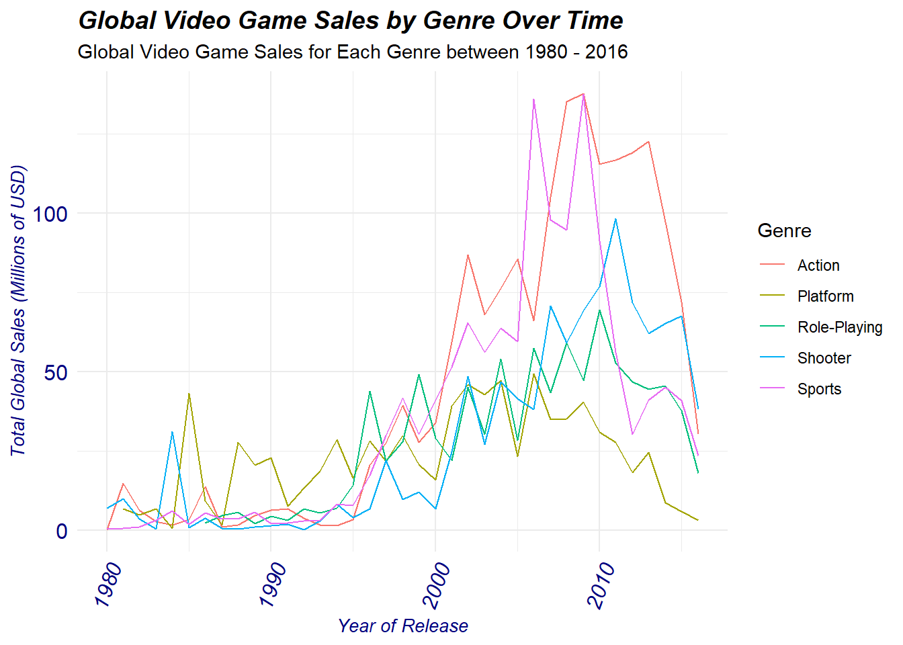
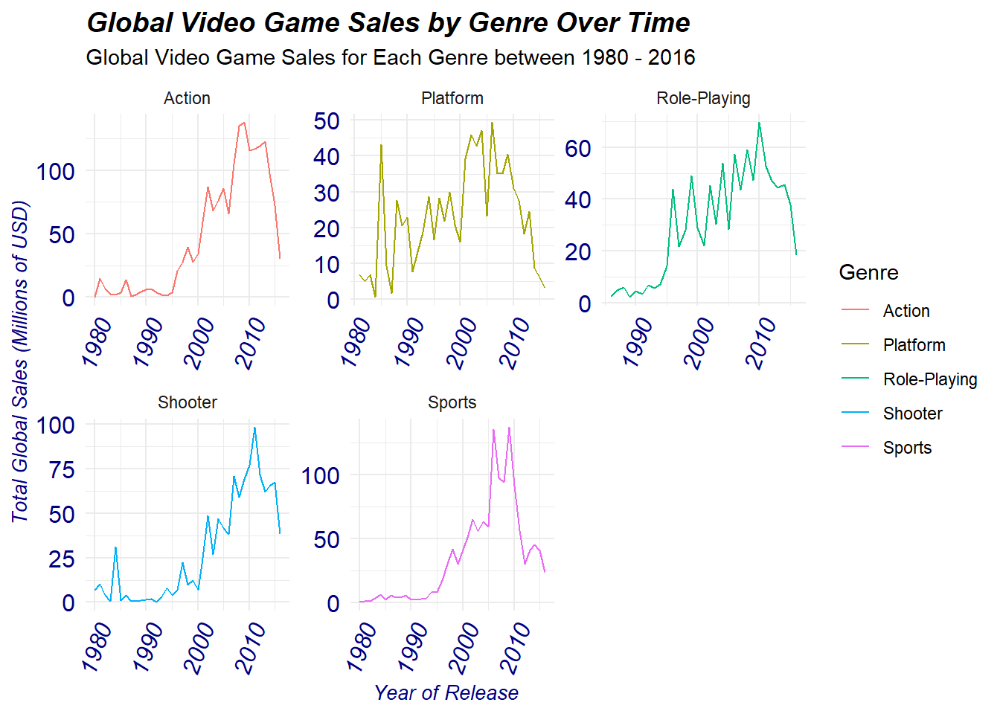
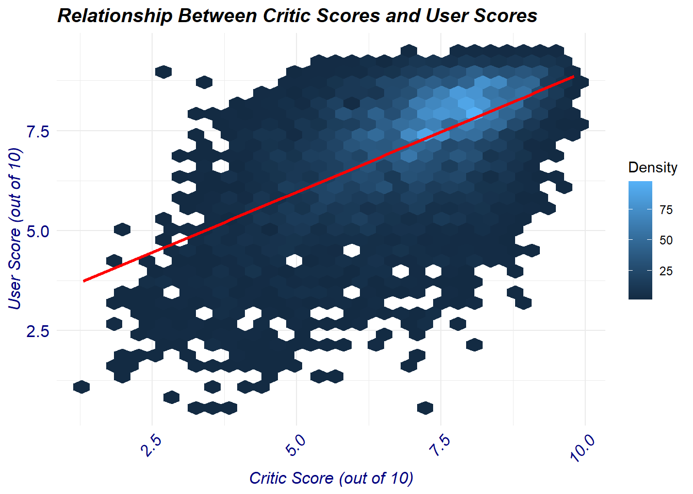
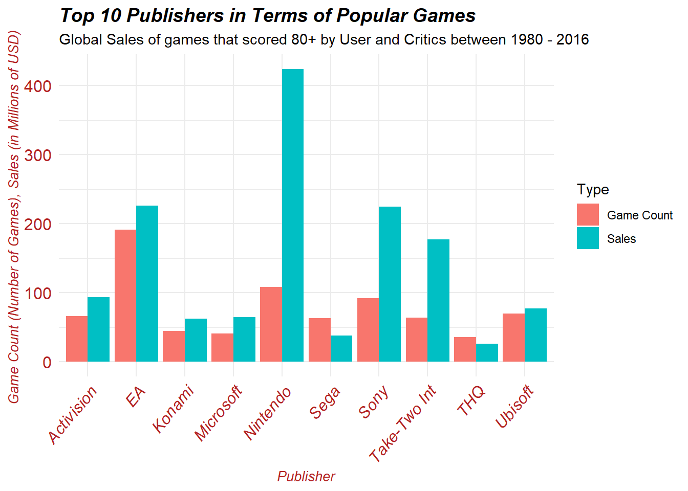
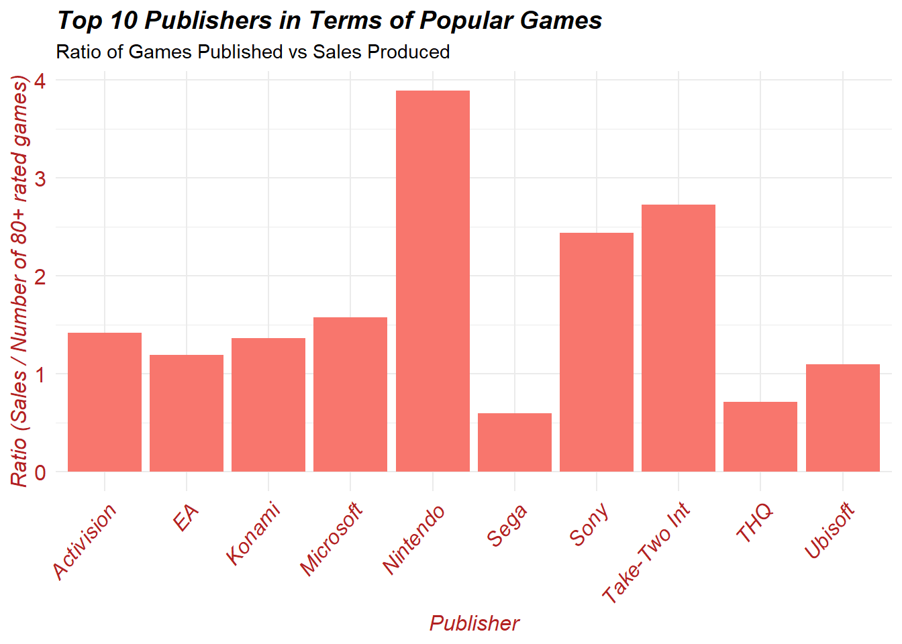
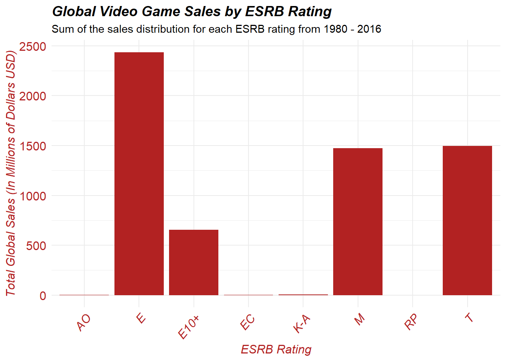

library(tidyverse)
library(broom)
library(rmarkdown)Video Game Data Analysis 1980 - 2016
Introduction To The Video Games Data-set
This data-set is stored in a csv file named ’’Video_Games_Sales_as_at_22_Dec_2016.csv”. We must first run tidyverse and broom.
We will then run our data-set of interest:
video_games <- read_csv("Video_Games_Sales_as_at_22_Dec_2016.csv")
paged_table(video_games)The above data-set contains 16,719 rows and 16 columns, and describes thousands of video games released from 1980 to late 2016. This data set focuses on the sales, critic, and user ratings of each of the games released on various gaming platforms from a variety of publishers and developers.
Every row is a video game title, these titles are not all unique as some video games release on multiple platforms. Below is a summary of each column that resides in the data-set.
| Name of Column: | Summary of Column |
|---|---|
| Name | Contains the name of the video game, usually written in the exact form as its box art during release |
| Platform | Contains the name of platforms that each game was released on, this data is written in the official platform short-name for example PlayStation 2 would be known as PS2 and Nintendo Entertainment System would be written as NES. |
| Year_of_Release | The year of which the game was released for sale to the public |
| Genre | The Genre to which the game released belongs too (NOTE: Games often have multiple genres but the primary genre is used in this case) |
| Publisher | The publisher of the game, for example Nintendo, Electronic Arts, Take-Two Interactive etc… |
| NA_Sales | Number of North American game sales in millions of dollars (USD) |
| EU_Sales | Number of European Union game sales in millions of dollars (USD) |
| JP_Sales | Number of Japanese game sales in millions of dollars (USD) |
| Other_Sales | Number of game sales in millions of dollars (USD) in other regions not mentioned in the previous 3 columns |
| Global_Sales | Number of game sales in millions of dollars (USD) worldwide |
| Critic_Score | Official scores of critics given to the game between 0-100 as compiled by Metacritic staff |
| Critic_Count | Number of official critics which contributed to the critic score in the previous column |
| User_Score | Score given out of 10 by Metacritic Subscribers |
| User_Count | Number of users who contributed to the user score from the previous column |
| Developer | Primary developer that created the game for example Rockstar Studios, Sony Interactive Studios, and Santa Monica Studios |
| Rating | Official ESRB (Entertainment Software Ratings Board) rating given to the game upon it’s release |
Research Questions of Interest
Using the video_games data-frame we will investigate 4 primary questions of interest.
How do global video game sales vary for the different genres over the time period of 1980 to 2016?
We will showcase how varying genres change in popularity as we move from the early 80s to late 2016 gaming. It will help categorize how our interests change per generation. We will use this data and investigate if the observed trends align with the technological and societal landscape of the time.
What is the relationship between critic scores and user scores for video games?
Since the early days of gaming their has always been a clear drift between the critic scores assigned to video games versus the user scores. We want to assess if their exists any possible correlation between the two groups and to see if they truly do differ.
Which publishers have released the highest number of video games with high user score and critic scores?
Here we want to assess which publishers are accredited with the most quality video games released. This criteria will be assessed based on which publisher generates a large library of 80+ rated critic and user scores. This library will also be investigated to measure the amount of sales produced and to assess the sale:game ratio for each publisher
How does the distribution of video game sales vary between different age ratings?
Here we will explore if certain age rated games are more favorable in terms of sales than others. For example I wish to explore the gaming demographic to see if Mature rated games produce more profit as compared to Child friendly or Family friendly gaming content. Statistical analysis will be incorporated to determine any possible correlations or significance.
Hygiene and Tidying of Data-Set
- Checking and Tidying the Name Column
We will go column by column and check certain functions , determining if the values are possible, formatted correctly, and determine of any data set editing is needed:
For the Name column, it is currently a character class, first I want to check the consistency of Names.
sample_names <- sample(video_games$Name, 100)
print(sample_names[1:10]) [1] "So Blonde"
[2] "Scooby-Doo! Mystery Mayhem"
[3] "Katekyoo Hitman Reborn! DS: Flame Rumble Mukuro Kyoushuu"
[4] "Pokemon Mystery Dungeon: Gates to Infinity"
[5] "GoldenEye: Rogue Agent"
[6] "Kingdom: Ikkitousen no Ken"
[7] "Freestyle Metal X"
[8] "WWE 2K15"
[9] "Major League Baseball 2K6"
[10] "Driver: San Francisco" Running the above code allows us to see 100 sample names taken from the data-set. Above we have shown only 10 of the respective game tittles outputted. When these tittles are examined on the internet we confirm that a vast majority of the tittles correspond to their official box-tittle name and are written as such in the video_games data-set. We repeated the above process a few times and found that in every case the name was accurately inputted.
Unfortunately, there is no CSV that contains a list of official game tittles that can be used to efficiently cross-reference. However, in the grand scheme of answering the research questions the name column is not entirely useful and thus it will not affect our analysis in any significant way.
Next, we checked the number of duplicate names, expect there to be multiple duplicate tittles because often times games release on various platforms.
duplicated_games <- sum(duplicated(video_games$Name))
duplicated_games[1] 5156We can see that there are 5156 duplicated tittles. In future analysis we will likely merge these tittles together but for now we will keep the data-set as is.
- Checking and Tidying the Platform Column
For the platform column we will check for any NA values, and to do this we run the following code
#| label: platform-columnNA
Na_Platforms <- sum(is.na(video_games$Platform))
print(Na_Platforms)[1] 0There are no NA values present for the platform column.
What is left is to check the number of unique consoles in the data-set and how they are named.
[1] "Wii" "NES" "GB" "DS" "X360" "PS3" "PS2" "SNES" "GBA" "PS4"
[11] "3DS" "N64" "PS" "XB" "PC" "2600" "PSP" "XOne" "WiiU" "GC"
[21] "GEN" "DC" "PSV" "SAT" "SCD" "WS" "NG" "TG16" "3DO" "GG"
[31] "PCFX"Here we can see there are 31 consoles in the database with all of them being abbreviated as they are by their respective manufacturer, example: GB is the Nintendo Abbreviation for the GameBoy, while PS2 is the Sony abbreviation for PlayStation 2.
For the platform column we can also plot the distribution of games released on various platforms, this allows us to authenticate the accuracy of the data-set and determine if there are any illogical releases.
We can plot the following:

From the distribution we observe extremely high counts for the DS and PS2, this is accurate because the Nintendo DS is the best selling handheld console of all time, while the PS2 is the best selling console of all time. Other suspicious values such as the 3DO, GEN, GG, NG, PCFX, SCD, TG16, and WS are extremely low not because they are outliers but they are all considered to be failed systems who did poorly when launched. The platform distribution does suggest the data-set to be accurate in reporting the amount of games released on each platform.
- Checking and Tidying the Year_of_Release Column
A lot of our research questions utilize the year for their respective analysis, therefore it is imperative we check and ensure all is running as intended.
Firstly, the Year_of_release column is a character column, for ease of analysis it needs to be converted to an integer column.
#| label: Year-column-integer
video_games$Year_of_Release <- as.integer(video_games$Year_of_Release)Once that is completed we checked for any NA values.
[1] "The Number of NA values is 269"There are 269 NA values for Year_of_Release, these will be filtered out in subsequent analysis when needed, this is because we might still need the other values assigned to those rows for some analysis that does not specifically require the year of release.
This data-set specifically states that data from the years 1980-2016 is included only, so lets quickly confirm this using a quick graph. We will also use the distribution to check for any outliers.

From the distribution we can see a noticeable right shift indicating a much higher frequency of released games after the 1990’s, this is actually an accurate reflection of the ‘gaming boom’ which occurred around that time period. As technology progressed, gaming consoles became a lot more affordable and many companies wanted to capitalize on this, this is why we see a very large spike in games produced until a peak of roughly 2009. After which, triple AAA gaming tittles began to decrease in favor of a more monetary ‘live-service’ game model. This explains the decrease in the number of games released up until 2016.
We can see from the graph data for 2017 and 2020 respectively that show up on the graph lets explore these tittles in more detail.
Additionally, You can notice the the distribution showcase video games released in the year 2017 and 2020 respectively that show up on the graph lets explore these tittles in more detail.
#| label: Year-column-oddtittles
video_games_oddyear <- video_games %>% filter(Year_of_Release == 2017 | Year_of_Release == 2020)
print(video_games_oddyear$Name)[1] "Imagine: Makeup Artist"
[2] "Phantasy Star Online 2 Episode 4: Deluxe Package"
[3] "Phantasy Star Online 2 Episode 4: Deluxe Package"
[4] "Brothers Conflict: Precious Baby" Here we see 4 tittles, each of which I looked up their official release dates and they actually lie between our 1980 - 2016 time span, so the inputted dates in the data set are incorrect. We will update this accordingly.
video_games$Year_of_Release[which(video_games$Name == "Imagine: Makeup Artist")] <- 2009
video_games$Year_of_Release[which(video_games$Name == "Phantasy Star Online 2 Episode 4: Deluxe Package")] <- 2016
video_games$Year_of_Release[which(video_games$Name == "Brothers Conflict: Precious Baby")] <- 2016By doing this we have overwritten the incorrect release dates with the correct ones. We can check this quickly by remaking our graph above:

the incorrect 2017 and 2020 time points no longer appear and are thus fixed.
- Checking and Tidying the Genre Column
For the genre, we want to ensure that there is no duplicate genres as well as ensure that any NAs are removed.
This is done with the following lines of code
Na_genres <- sum(is.na(video_games$Genre))
print(Na_genres) [1] 2video_games <- video_games %>% filter(!is.na(Genre))
unique_genre <- unique(video_games$Genre)
print(unique_genre) [1] "Sports" "Platform" "Racing" "Role-Playing" "Puzzle"
[6] "Misc" "Shooter" "Simulation" "Action" "Fighting"
[11] "Adventure" "Strategy" There are 12 unique genres all of which are spelled correctly, and consistent throughout the database.
- Checking and Tidying the Publisher column
For the publisher column we check for any NA values and we also check to see how many unique publishers are present in the database.
[1] "The Number of NA's is 0"[1] "The number of unique publishers is 582"There are no NA values present in this column, indicating all publisher information is inputted. There also appears to be 582 unique publishers, and when searching all of them up and appear to be legitimate publishers, additionally the spelling and naming convention matches that of the official publishing name as reported by each company.
- Checking and Tidying the Global_Sales column
For the purposes of our exploratory analysis we will not focus on region specific video game sales, so we will not check or clean up the NA_Sales, EU_Sales, JP_Sales, or Other_Sales, we will only focus on the Global_Sales column.
We will check for NA values, impossible values, and perform a quick summary stat to check this.
(Note to simplify, going forward for many repetitive lines of code we will only show the output)
[1] "The Number of NA's is 0" Min. 1st Qu. Median Mean 3rd Qu. Max.
0.0100 0.0600 0.1700 0.5335 0.4700 82.5300 We can see there appears to be 0 NA values, indicating all rows have a reported global sales figure. Additionally, the global sales minimum value is 0.0100 and the max value is 82.53, this tells us that the values are within the expected range, we don’t have any negative numbers or any extremely large number that is not logical.
Just to be sure we can quickly search up which game generated 82.53 million dollars and ensure that this is a legitimate value and not some outlier. This value is confirmed by Nintendo as the official sales figure belonging to Wii Sports.
- Checking and Tidying the Critic_Score column
We again check for the NA values and any illogical values similar to what was performed above.
[1] "The Number of NA's is 8580" Min. 1st Qu. Median Mean 3rd Qu. Max. NA's
13.00 60.00 71.00 68.97 79.00 98.00 8580 8580 NA values are present in the Critic Score section, these will be filtered out in later analysis to keep the data-set consistent for now. We can also see that the minimum score is 13 and the max is a 98, there appears to be no values that are greater than 100 or less than 0, this indicates that our critic score is logical.
We can also quickly visualize the critic score distribution and check to see where most of the values lie:

Most critic scores appears to lie in the 75 range while the values are between 0 and 100, as indicated by our summary stat above. Some games fall in the extreme lows and highs but this is to be expected with this sort of media.
- Checking and Tidying the Critic_Count column
We check and ensure the Critic_Count column, similar to the above we will check for any NA values or illogical values.
[1] "The Number of NA's is 8580" Min. 1st Qu. Median Mean 3rd Qu. Max. NA's
3.00 12.00 21.00 26.36 36.00 113.00 8580 Since Critic Score and Critic Count are related it is expected that they both will share the same number of NA’s which is 8580 NA values. Meanwhile, the min value is 3 and max is 113 this indicates that there are no illogical values present.
- Checking and Tidying the User_Score column
We check and ensure the User_Count column, similar to the above we will check for any NA values or illogical values.
[1] "The Number of NA's is 9127" Min. 1st Qu. Median Mean 3rd Qu. Max. NA's
0.000 6.400 7.500 7.125 8.200 9.700 9127 9127 NA values are present in the User Score section, with the summary statistics showcasing a minimum value of 0 and maximum of 9.7 this indicates that there are no illogical values present. Remember, the user score column is out of 10 and not out of 100. This is why the maximum is only 9.7.
- Checking and Tidying the User_Count column
We will repeat the same checks as the above for the user count column.
[1] "The Number of NA's is 9127" Min. 1st Qu. Median Mean 3rd Qu. Max. NA's
4.0 10.0 24.0 162.2 81.0 10665.0 9127 9127 NA values are present in the User Count section with the summary statistics showcasing a minimum value of 4 and maximum of 10,665, although the maximum number might be unusual it is not, the User scores for many popular games tend to be in the 1000’s.
- Checking and Tidying the Rating column
For the purposes of our analysis we will not focus on the developer column in any way so I will not check it as it has no basis in our EDA.
The rating column will be checked for any NA’ss and also ensure that the correct rating scale has been inputted into the data-base.
[1] "The Number of NA's is 6767"[1] "E" NA "M" "T" "E10+" "K-A" "AO" "EC" "RP" 6767 NA values are present and we will remove them further in out analysis. Furthermore, We can see that there is 8 unique Ratings (excluding the NA) which compliment those on the official ESRB website.
Investigating Our Research Questions of Interest
- How do global video game sales vary for the different genres over the time period of 1980 to 2016?
I want to create a time series plot of global sales by platform, but first we must filter out the NA’s out of the Global_Sales column.
In the above code NA values for year and global sales are removed, then the games are grouped by genre and year and summarized the total global sales of each genre for that given year.
Next, we filter out the video games data-set to summarize the global sales by genre, this is done via the following:
global_sales_summary <- video_games %>%
filter(!is.na(Global_Sales), !is.na(Year_of_Release)) %>%
group_by(Genre) %>%
summarize(Total_Genre_Sales = sum(Global_Sales)) %>%
arrange(desc(Total_Genre_Sales))Then we slice out only the top 5 genres and make that the focus of our study:
top_5_genres <- global_sales_summary %>%
slice(1:5) %>%
pull(Genre)We then create a plot showcasing these 5 genres global sales over time:

We will recreate the plot and separate by each genre to make it easier to view:

We can see that almost all of these 5 genres with the exception of platform peaked between 2006 - 2011. The biggest heights attained in terms of global sales as seen on the graph can be credited to both the action and sports genres where both easily surpassed the 100 million USD global sales mark. Not far behind, is the shooter genre which peaked at ~100 million USD global sales. Meanwhile, platform and role playing reached a peak in between 50 - 60 million USD in global sales.
The peaks in these five genres all occurred during the early 2000’s coinciding with the release of the sixth-generation of consoles, these consoles greatly increased the quality of video games due to there technological innovation. This allowed developers to produce better quality games specifically for the Action, Platform, Role-Plating, Shooter, and Sports genres which were in high demand due to there graphical and technical game play. Additionally, consoles were made increasingly more affordable during this time-period allowing many families to purchase one at a low cost which subsequuently drove up global video game sales.
Interestingly, all of these 5 genres sales begin to decrease after 2010. This observation is actually not due to a lack of interest in these genres but is rather credited to the great recession, whereby video games began to be perceived as luxury items and thus consumers were not willing to spend as in previous years contributing to a dip in overall sales.
Furthermore, subsequent inflation following 2010 and into 2016 brought the average video game price up from 55 USD up to 70 USD, further reducing the amount of video game sales sold per genre.
However, to this day the five genres focused on above remain the most best selling genres per year often producing the most quality games and winning various awards yearly.
- What is the relationship between critic scores and user scores for video games?
First, we filter out the Na’s from both the critic score and user score columns respectively. We do this by first selecting only the Critic_Score and User_Score columns and setting them to scoring_data.
#| label: Filter-Critic-User
scoring_data <- video_games %>% select(Critic_Score, User_Score)
scoring_data <- scoring_data %>% filter(!is.na(Critic_Score) & !is.na(User_Score))By doing the above code, we have created a data frame that contains only our Critic score and User score information. Additionally only the rows that have BOTH values present are included in this dataset.
Next we convert the Critic_score ratings into an out of 10 system, just like the User_score ratings, this will keep the values consistent for both the graph and statistical analysis.
scoring_data <- scoring_data %>% mutate(Critic_Score = Critic_Score / 10)We then visualize the correlation between the User and Critic score columns by generating a hex plot:

Based on the hex plot generated, we can see that there is a lot of density for scores that are between 6.5 and 8 indicating that perhaps higher rated games tend to receive similar scores from both the critics and the users. We can also see various games that received high scores form critics but were not as well received by the users, and vice versa.
To better understand the outcome of our hexplot we will perform a pearson correlation coefficient, lm-summary model, and a t-test to determine the strength of the correlation between the critic and user scores.
Pearson Correlation Coefficient:
[1] "Pearson Correlation Coefficient: 0.5809"The pearson correlation coefficient appears to indicate a moderate positive correlation between critic and user scores (r = 0.5808). This indicates that whenever an increase in critic scores occurs the user scores usually increase as well. However, This correlation is not perfect indicating that other factors are potentially influencing this observation.
lm-summary model:
Call:
lm(formula = User_Score ~ Critic_Score, data = scoring_data)
Residuals:
Min 1Q Median 3Q Max
-6.6880 -0.5530 0.1564 0.7470 4.3261
Coefficients:
Estimate Std. Error t value Pr(>|t|)
(Intercept) 2.94544 0.07226 40.76 <2e-16 ***
Critic_Score 0.60313 0.01009 59.77 <2e-16 ***
---
Signif. codes: 0 '***' 0.001 '**' 0.01 '*' 0.05 '.' 0.1 ' ' 1
Residual standard error: 1.173 on 7015 degrees of freedom
Multiple R-squared: 0.3374, Adjusted R-squared: 0.3373
F-statistic: 3572 on 1 and 7015 DF, p-value: < 2.2e-16The above linear regression model indicates a statistical significance (p < 0.001). The R-squared value is 0.337 which indicates that roughly 33.7% of the variability in the user scores can be explained by critic scores.
T-test analysis:
Welch Two Sample t-test
data: scoring_data$Critic_Score and scoring_data$User_Score
t = -6.5912, df = 14012, p-value = 4.518e-11
alternative hypothesis: true difference in means is not equal to 0
95 percent confidence interval:
-0.2042684 -0.1106240
sample estimates:
mean of x mean of y
7.024982 7.182428 The t-test comparing the means of critic scores and user scores indicates statistical significance in the scores between the two groups (p < 0.001). In detail, the mean critic scores are significantly lower than the mean user scores.
Statistical Summary:
Below we created a table summarizing the key results of the above statistical analysis:
Overall, the results of the statistical analysis suggest that there is a significant positive relationship between the critic scores and user scores of various video games between 1980 to 2016. Furthermore, based on the linear regression model generated, the relationship between the critic and user scores appears to suggest correlation. However, it is important to note that while there is statistical significance, there does not disprove the potential for a variety of other factors that can influence the user or critic scores.
To draw more on the earlier statements, one variable that can also influence the correlation between the critic and user scores is the introduction of “publisher sponsorship”. This has been a recent trend ever since 2014 whereby publishers of the game will often “sponsor” critics (pay money) for more favorable reviews. This can drastically skew the ratings to be more positive and thus reduce the correlation with user scores. One future analysis that can be done with an alternative dataset would be to plot the user and critic scores of all publisher sponsored games and compare to those that were not to see how much that would affect the correlation.
- Which publishers have released the highest number of video games with high user score and critic scores?
To begin investigating this question we have to filter for games that scored 80 or higher for BOTH the user and the critic score. We then group by publisher and showcase how many high-rated games each publisher produced and there respective sales. This is accomplished with the the following lines of code:
#| label: Filter-Game-Score
High_score_games <- video_games %>%
filter(User_Score >= 8.0 & Critic_Score >= 80)
high_publisher_count <- High_score_games %>%
group_by(Publisher) %>%
summarise(Game_Count = n(), Publisher_Sales = sum(Global_Sales)) %>%
arrange(desc(Game_Count))
Top10_high_pub <- slice(high_publisher_count, 1:10)The “Top10_high_pub” simply selects the top ten publishers based on the number of high-rated games produced. We can utilize this to generate a double bar graph showcasing the respective global sales of these games alongside the number of high-rated games for each publisher.

We can immediately see that EA has generated the most 80+ rated games between 1980 and 2016. However, we can also see that clearly Nintendo has made the most global sales from their 80+ rated game catalog even though they have less 80+ games produced relative to EA. This observation led us to generate another visual which graphs the ratio of global sales to the amount of 80+ rated games. In this way we can see which publishers tend to generate more global sales per 80+ game released.
We start off by creating this ratio:
#| label: Filter-Ratio
Top10_high_pub$GametoSale_Ratio <- Top10_high_pub$Publisher_Sales/Top10_high_pub$Game_Countand then we generate a bar graph:

When observing the above figure we can see that Nintendo, Take-Two Interactive, and Sony lead all publishers in terms of global sales per 80+ rated game. This is not surprising as these three publishers have existed for decades and are responsible for progressing video games and its respective technologies to new heights every year.
Thus, it appears that EA has generated the most 80+ rated games between the years 1980 - 2016, however Nintendo, Take-Two Interactive, and Sony are credited with making the most amount of global sales from each 80+ rated games. Lastly, Nintendo has generated the most global sales out of any publisher with respect to its 80+ game library at a whopping 424 million dollars in sales.
- How does the distribution of video game sales vary between different age ratings?
To begin, we create a new dataframe that filters out any NA ratings and then we group by these ESRB ratings and showcase the total global sales for each category.
#| label: Filter-ESRB
ESRB_sales <- video_games %>% filter(!is.na(Rating)) %>%
group_by(Rating) %>%
summarise(Total_ESRB_Sales = sum(Global_Sales))We want to visualize the data generated from the data frame above by plotting a bar graph.

Immediately, we can observe that E, E10+, M, and T all have much more global sales than any other ESRB category, with E rated games containing the most global sales.
To better determine if certain age ratings truly generate more sales we will perform a one-way ANOVA.
We start off by creating a dataframe containing only the Rating and Global_Sales column. We will also filter out any NA’s and turn the Rating column from characters to a factors. This step needs to occur prior to performing the ANOVA model, otherwise it will not work.
#| label: ESRB-ANOVA-Filter
ESRB_sales_for_ANOVA <- subset(video_games, select = c("Rating", "Global_Sales"))
ESRB_sales_for_ANOVA <- ESRB_sales_for_ANOVA %>% filter(!is.na(Rating)) %>%
group_by(Rating)
ESRB_sales_for_ANOVA$Rating <- factor(ESRB_sales_for_ANOVA$Rating)Then we can perform the one-way ANOVA:
The one-way Anova contains a very small p-value which is essentially just zero, this indicates that there is diffidently statistical significance between each of the ESRB rating categories in terms of global sales.
The ANOVA has helped identify that rating appears to influence sales but we want to perform a tukey’s pairwise test and narrow in on significant pairwise comparisons.
Our code only tabulated the significant pairwise comparisons, we can see that M (Mature) and E (Everyone) rated games are statistically significant in terms of sales. This is also the case for M (Mature) and E10+ (Everyone 10+) games, with T (Teen) and M (Mature) also showcasing the same statistical significance.
We detailed our conclusions from the tukey’s test in the table below:
| Pairwise Comparison (ESRB Ratings) | Tukey’s Test Results Explanation: |
|---|---|
| Mature (M) - Everyone (E) | The difference in means between these groups is 0.332, with a confidence interval between 0.183 - 0.483. Positive values indicate that the mean global sales value for M rated games is higher than that off E rated games. The adjusted p-value is extremely small, indicating a highly significant difference between M and E in terms of global sales. |
| Mature (M) - Everyone 10+ (E10+) | The difference in means between these groups is 0.481, with a confidence interval between 0.297 - 0.665. Positive values indicate that the mean global sales value for M rated games is higher than that off E10+ rated games. The adjusted p-value is 0, indicating a highly significant difference between M and E10+ in terms of global sales. |
| Teen (T) - Mature (M) | The difference in means between these groups is -0.438, with a confidence interval between -0.595 and -0.281. Negative values indicate that the mean global sales value for T rated games is lower than that off M rated games. The adjusted p-value is 0, indicating a highly significant difference between T and M in terms of global sales. |
The Tukey’s test helped showcase that there is indeed a difference when it comes to generating more sales for certain ESRB ratings when compared to each other, mainly it appears that M rated games are more favorable in terms of global sales when compared to T, E, or E10+ games.
Lastly, we will perform a linear model and determine how much the ESRB rating influences sales. We will model Global Sales as a function of rating. In other words, we want to predict global sales using rating as the predictor variable. We run the linear model and output the data below:
Call:
lm(formula = Global_Sales ~ Rating, data = ESRB_sales_for_ANOVA)
Residuals:
Min 1Q Median 3Q Max
-1.433 -0.485 -0.355 -0.022 81.919
Coefficients:
Estimate Std. Error t value Pr(>|t|)
(Intercept) 1.9500 1.6550 1.178 0.239
RatingE -1.3394 1.6552 -0.809 0.418
RatingE10+ -1.4882 1.6556 -0.899 0.369
RatingEC -1.7275 1.7554 -0.984 0.325
RatingK-A -0.5067 1.9110 -0.265 0.791
RatingM -1.0070 1.6555 -0.608 0.543
RatingRP -1.9233 1.9110 -1.006 0.314
RatingT -1.4453 1.6553 -0.873 0.383
Residual standard error: 1.655 on 9942 degrees of freedom
Multiple R-squared: 0.008858, Adjusted R-squared: 0.00816
F-statistic: 12.69 on 7 and 9942 DF, p-value: 2.533e-16Overall, the linear regression model indicates that there is some relationship between rating and global sales, however the coefficients of the different rating groups are not statistically significant. Moreover, the model only accounts for a small amount of variance in global sales. This suggests that there are additional factors which contribute to video game sale success aside from just its ESRB rating.
Credits and Ending:
This concludes the above EDA which investigates 4 research questions related to video game data collected between 1980 - 2016.
The “Video_Games_Sales_as_at_22_Dec_2016.csv” dataset was taken from the following link: https://www.kaggle.com/datasets/sidtwr/videogames-sales-dataset/data?select=Video_Games_Sales_as_at_22_Dec_2016.csv
No Authors were credited in the creation of the data set but the dataset was motivated by Gregory Smith’s web scrape of VGChartz video games sales. The user who uploaded the dataset on R was SID_TWR.